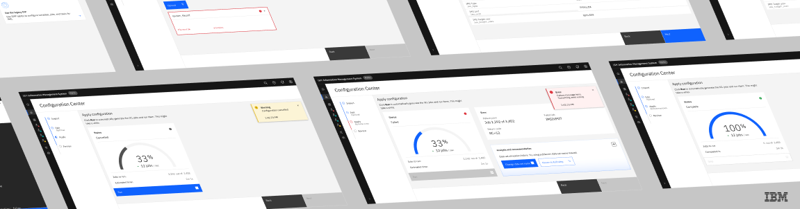
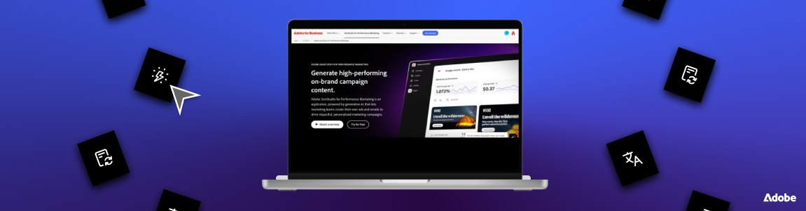

Internship — Summer 2026
Creating web UI for Information Management System tools

Internship — Summer 2025
Boosting paid social campaign content production with AI tools
Personal Project — Fall 2025
Creating a safe space for women's health support
Personal Project — Spring 2025
Reimagining the remote pet-care experience